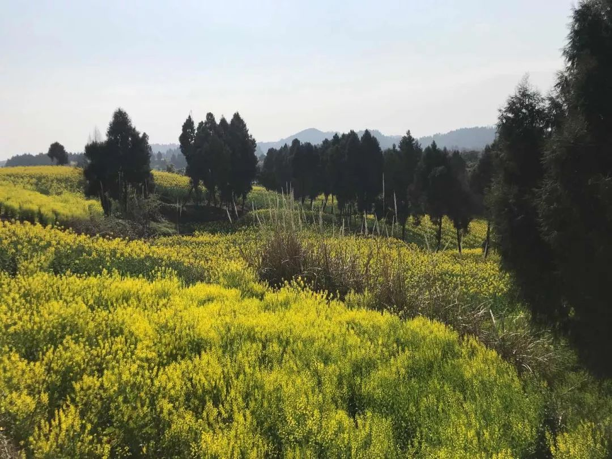

一名援鄂重症病房医护：悄无声息地“坚强”
原文链接 备份链接 河北医科大学第二医院麻醉科ICU护士 朱君宇 澎湃新闻记者 吕新文 2月21日，第八批河北省援鄂医疗队 175人又踏上了征程，至此，河北省共派出了1036名医护人员驰援湖北。 新冠肺炎的爆发，让我们度过了一个百感交集 …

“
- 疫 情 之 下 -
外面没有好消息，我们市里有两例确诊了，他们都是从武汉回来！我不敢把任何不好的消息告诉爸爸，怕他心理负担重。
”
1
2020年1月18日，公司年会，这一天大家跟往年一样——总结，去食堂吃午餐，看节目、表演节目，回家。
当时，我想买点年货回家，缺席了下午的节目表演。到现在，我无比庆幸，这一次，我没去那个客流量最多、货品最丰富的超市，而是去了家附近刚开的超市。
到现在还能记起来，当天在超市，我跟几个人说了话、距离他们有多远——这些画面在我隔离期间，被无数次回忆。我怕，怕自己中招，只能无数次自言自语：没事，隔得远，没近距离接触，新开的超市，他们的健康证也肯定是新办的。
19日，我也是安全的，在家待了一天，哪儿也没去。
当天晚上，同学给我打电话，问我是否还好。我还跟他说，还好，病毒传染强度低，源头在汉口，离我远着呢，明天就回家了，没事的。
20日，还是选择了拼车。车上，师傅没戴口罩，后排是三个从全国各地到武汉开年会的人，只有一个戴了口罩。她跟另外两个人说要戴口罩。
一个从深圳来的人说，没事，死亡的病例有既往病史，感染的都是老人居多，不用担心。她就把口罩摘了，三个人愉快地聊了起来，唾沫横飞。我把脸塞进了衣领，没吭声，有点控制不住地一直看手机，这一路似乎特别漫长。
地铁站、地铁上，没几个人戴口罩。我继续把脸塞进衣领，面对着另一侧车门站着。到了汉口站，乌泱泱全是人，只有很少的人戴着口罩，人群像月光下的一潭死水，泛着零星白光。
易感染的老人，几乎没有一个戴口罩的，更有一些婴儿被父母绑在胸前，没做任何防护。我越看越恐惧，恨不得把头都埋进衣领里，只留下两只眼睛。
好不容易上了车，整节车厢，即使先前戴了口罩的，也都摘下来了。我只能脸朝着车窗，一直朝车窗，用衣服蒙住头。其间，任何一声咳嗽，都能让我如坐针毡，偏偏我后面的一个阿姨，一直干呕……
在车上，终于看到“人传人”的消息传出来了，我的心也越来越沉，沉到离开座位，去看看其他车厢的勇气都没有了；也不敢再喝水，怕穿过车厢去厕所。
堂妹发微信跟我说：在车站外等我，车找好了。
我不知怎么跟她说，最后回：好的，一会儿我们少说话。武汉有点严重，回家后，你们都离开远点。
她说：哪有那么严重，你没事的。
要是真没有那么严重，就好了。
2
回到家后，我把能找到的抗病毒感冒冲剂、莲花清瘟都喝了，天一亮，就去药房买了口罩，又买了好几袋感冒冲剂。每年过年，我最爱感冒，但今年我不敢感冒了。
从药店回家的路上，我一直看各种信息，惴惴不安。而我老家这个偏远的小县城里，到处都是人，人挤人，人挨人，他们不关心别的，春节对他们意味着团聚，可这是这个时候最不能做的事。
姑姑、姑父回来过年，我不敢跟他们靠得太近，不敢跟他们面对面说话，即使说话，我也刻意隔得远些。他们知道湖北有事儿了，但不知道这么严重。
妹妹的小孩还很小，摔地上了，我不敢抱，更不敢碰。他还那么小，爱笑，是我妹妹的宝贝，我只能远远地看着。
我不敢跟他们一起吃饭，端着碗在门外吃。有一天甚至为了不跟他们接触，一天没吃饭。我甚至想，要是这时候把我关起来就好了，这样他们不会有事，他们其中任何一个人有事，我都承受不起。
可是，真的没事吗？真的没有密切接触就行了吗？我不知道，更不敢知道。
武汉封城了。我去村里登记，一再强调，愿意配合任何检查。结果村联络员忙中出错，把我跟另一个从深圳回来的小伙子弄错了，他去检查了，我留下来了。
姑姑、姑父怕高速封路，开车赶回去了。妹妹也带着孩子离开了老家。我都不敢说，没事的，我没事，你们也没事。这个潜伏期这么长，谁知道呢？
终于，村联络员给我打来电话，让我去检查。乡下能检查什么呢，有试剂了吗？我请他们派一个人来跟我一起去。不到半个小时，她带着卫生员来到我家，给我量了体温，谢天谢地，36.4摄氏度，还算正常。她们留下了体温计，告诉我早晚测两次，打电话告诉她们。
28日，一辆宣传车直接停到我家院门口。片警、卫生员、联络员、镇党委书记、村长等，来给我宣讲居家隔离的一些要求。
我看到很多乡邻，远远地看着，我听见邻居打电话给他家孩子说我家来了“警车”。我还要回答党委书记的各种盘问：武汉放了500万人走，你为什么回来！
我是外人，不该存在的吗？难道我就是病人了吗？难道500万人都是病人了吗？我徒劳地解释：我每年都过年回家，车票是12月22日就买了的……
3
29日，妹妹发来微信，问我是不是坐的D2259。
我脑子一下懵了，为什么要问我这个？D2259，汉口—成都东，10:36开，19:38到成都东，我总是坐这趟车回家，时间刚好，不用赶，到了成都还能跟堂妹吃串串。

有一分钟，我想不起，自己是不是坐这趟车回四川了。我的手在打战，甚至想不起来，该怎么查坐的哪趟车回家。
妹妹接着发来一张图。
我叫了一声：“爸爸！”
爸爸问我什么事。我退后好几步，才对他说：你先别过来，我坐的这趟车、这节车厢回家。家里信号很差，图一直不显示，我的手一直抖，心像被用手紧紧捏着……
“寻找1月21日乘坐D2259第7车厢的乘客，该车次车厢有旅客确诊，请同乘旅客第一时间跟当地疾控中心联系……”
1月21日D2259第7车……D2259第7车，我就是第7车，我也是坐的D2259。1月21日，21日，我是20日……谢天谢地。
这时我才发现，爸爸一直站在原地没动，看着我，脸色比平时还不好，他一直就是一张严肃脸，因为这个事情，脸色更不好看了。
“没事了，我是20号火车，找的是21号的乘客。”我对他勉强笑笑说。过了一小会儿，他才说：“我就说嘛，你20号的火车嘛……哪有那么巧……”
隔离的日子特别难熬，太漫长了。
我不敢跟别人多说一句话，哪怕隔得再远。其实也没人跟我说话了。我跟爸爸，连着我家的院子成了一座孤岛。岛外的人，热热闹闹，仿佛隔绝了我们，他们就是安全的。岛内，我跟爸爸居于孤岛的两端，隔着厚厚的墙壁大声说话。
但能说什么呢？我们不说话，我们像孤岛里沉默的兽，倔强地隐忍地活着。真的活着吗？还能活多久？兽是不会想这些的。
外面没有好消息，我们市里有两例确诊了，他们都是从武汉回来！我不敢把任何不好的消息告诉爸爸，怕他心理负担重。
我更怕的是，这些坏消息，需要我去讲述给他听。对于他的身体而言，我就是最大的坏消息——从武汉回来，而且暴露着从汉口回来。
爸爸开始在屋里整天整天地看电视。而我常常带一本书坐在屋顶。
每天一坐上屋顶，手中的书刚翻两页，我就不知不觉地陷入回忆。每次回忆都离不开离开武汉前我都跟谁接触了，超市收银员、滴滴师傅：离开武汉后，我又跟谁接触了，爸爸、堂妹、姑姑、姑父、叔叔、婶婶、爸爸、药店售货员……
真的没有跟他们面对面说过话吗？
每次我都以自责结束，为什么不在爸爸一定要穿过市场去买菜的时候阻止他；为什么不给姑姑说她戴的布口罩没有用；为什么不从一开始就戴上口罩；为什么要20号才回来？
为什么……我……要回来？
4
后来几天，天气不好，下雨，又湿又冷，疫情也越来越严重，我总是嗓子干，偶尔还头疼，家里消毒水的味道很重，熏得我更难受！
我怕跟爸爸说，怕他担心。我又怕他自己不舒服，不跟我说。晚上，我一听到他咳嗽，就会立刻问：“量下体温好不好？”
他总说自己是老咳嗽了，没事。我总要重复：“有任何不舒服，乏力、咳嗽、呼吸困难、发热，都要跟我说，不要瞒着我！”
他总说我多事。
可我生怕他有事，因为传播的信息都在说，老年人免疫力差，容易感染，有无症状感染者没事，家人相继感染的例子。这种状况，是我最不能接受的。
我宁愿自己有事，也不愿亲人因我有事。
直到最后一天，我终于要解除医学观察了。这一天，似乎过得特别慢，吃完早饭，我又量了一次体温。还不到9点，我掏出书，坐在楼顶，看了几行字，过一会儿又重复地看那几行字，每个字都认识，合在一起却看不懂意思了。
不知道为什么，头隐隐作痛。想再量一次体温，又有点犹豫。我反反复复地拿起书，又放下。
爸爸坐在他平时钓鱼用的小凳子上，一直守在院门口。我告诉他，联络员大概下午才来。他说：“我哪是在等她哟，我就坐坐。今天空气好！”
下午5点，天放晴了，夕阳洒满了我家的小院落。联络员和卫生员为我跟爸爸最后量了一次体温，正常。告诉我可以外出了，但要戴口罩！
她们俩披着落日余晖离开了。
我回头对爸爸说，暂时安全了。我相信，他肯定直接忽略了“暂时”，跳到了“安全”。这么多天，他总算是第一次舒心地笑了说，主动要求量体温：“体温计拿来，量量体温！”
再后来，听说潜伏期最长24天了。熬过了最初的14天，我也没那么焦灼了，坐在楼顶看完了一直没有坚持看完的《霍乱时期的爱情》，又开始翻《一个人的好天气》。

今天，是我离开武汉的第二十五天，经过前段时间的湿冷天气，我这边蜂蝶成群，金黄的油菜花铺满了整片坡地。我站在油菜花田中，闻着微风送来的甜蜜花香，突然想起，武汉那边的樱花怕是也要开了吧？
-END-
作者 | 拒绝，青年作者。
题图|《阳光普照》剧照
华中科技大学出版社·武汉战“疫”数博馆
抗击新型冠状病毒感染肺炎疫情作品资料正在征集中——
【征集要求】
＊来稿应为未公开发表和出版的内容，题材不限，
VLOG、文字、图片等均可，务必客观真实，
反映疫情当下的民生现况及个人见闻；
＊提供作品者都将获得华中科技大学出版社提供的“宅家悦读大礼包”；
＊作品一旦录用，将提供完整规范的版权保护。
【投稿方式】
音视频：2279281426@qq.com
文字：423322329@qq.com
图片：454578039@qq.com
或点击下方链接直接投稿
http://2019ncov.xiushewang.com/
请务必留下真实姓名及详细联系方式。
“我故”故事练习生培养计划，详情请戳：

About us
主编：鹿｜本期编辑：鹿
Contact us
投稿/商务合作/咨询
微信后台留言 or 邮箱：wmsygsdr@163.com
**我们是有故事的人｜华中科技大学出版社官方故事平台**
原文链接 备份链接 河北医科大学第二医院麻醉科ICU护士 朱君宇 澎湃新闻记者 吕新文 2月21日，第八批河北省援鄂医疗队 175人又踏上了征程，至此，河北省共派出了1036名医护人员驰援湖北。 新冠肺炎的爆发，让我们度过了一个百感交集 …
原文链接 备份链接 你印象中的武汉是什么样的？ 这座位于华中地区的省会城市充满着生命力，夏天够热，热干面是他们最常见的美食，闲下来的老人们会聚在街头巷尾打牌，春节是他们最热闹的节日，有归乡的年轻人，有早早就置办年货的老人，有火红的对联和热 …
原文链接 备份链接 武汉水系多，长江汉水交汇，划分出武汉三镇。江水浩荡，码头就多，拼码头靠什么？靠“斗狠”。武汉的汉正街在江边，过去全国各地的小商贩来打货，江边有很多做苦力的“扁担”，与重庆棒棒一样，帮小老板们用扁担挑子来运货，靠苦力 …
原文链接 备份链接 “ - 疫 情 之 下 - 武汉的疫情就像一簇紧簇的乌云，笼罩在每一个人的心头。但所幸，在这个受伤的城市中，在每台志愿者车里，在疲于奔波的路上，总有那么一群可爱的人，温暖着我们前线医护工作者的心。 ” 1 2020年 …
原文链接 备份链接 “ - 疫 情 之 下 - 父亲作为一家之主，把家里卖粮食的一万多块钱当做货款结给了供应商，按照他交代给我们的原话：“咱们已经吃亏了，就不要再让别人吃亏了，也让人家回家好好过个年。” ” …